Bits and Bytes
I already wrote of this before in one of the replies over at the Office Automation Worksheet.
Of the bits and the flowers
Once upon a time, there was a bit of data so small, its only name could be that of "bit". It could only hold a value which swayed between one value and the other, and nothing else. An eternal YES-NO, ON-OFF, 0-1.
And what of the flowers? I don't know.
And along came the byte
The thing about bits, is that they were very small, and meaningless, by themselves; and there were too many of them, even in the older computers. It was not very practical to have every sigle bit have a house by itself, since it would take the same amount of bits as there were on a machine, just to properly be able to address them.
So a bunch of bits decided to get together and form a row of--usually--8 bits. This way, they could represent values and have reasonably-sized, 8, 16, 32, and then 64-bit addresses.

In the beginning was the Word...
... and the Word was an arranged set of bits, similar to the byte; in this case, the lenght of a word was--again, usually--32 bits, or what's to say, 4 bytes. After the word, larger arrangements were the long word (64-bits or 8 bytes), and the quad word (128-bits or 16 bytes).
